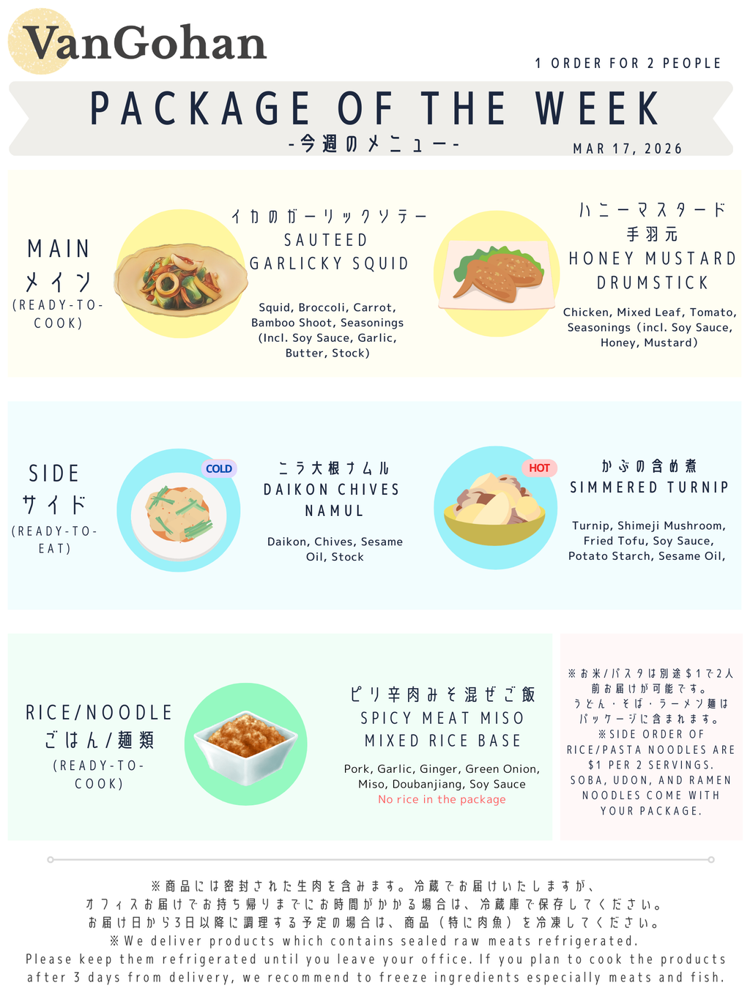

VanGohan Recipe: Week of 2026-03-16
ハニーマスタード手羽元
- Ingredients are marked with Blue Stickers
- Cooking time: 20-35 mins
ご自宅でご用意いただくもの
インストラクション
- ボールにドラムチキンと Seasoning①を入れよく揉みこんで10−15分ほど置いておく
- 小麦粉を加えて全体にまぶす
- フライパンに油を入れ熱し、ドラムチキンを一面ずつこんがりと焼いていき、全面が焼けたら野菜を加える
- Seasoning④を加えて弱めの中火でドラムチキンにタレを絡めるように火を入れる
- 鶏肉にしっかり火が入っているか確認してお皿に盛り付ける
イカのガーリックソテー
- Ingredients are marked with Orange Stickers
- Cooking time: 20-25mins
ご自宅でご用意いただくもの
- サラダ油
- 100mlの水、大さじ1の水
- 塩コショウ
インストラクション
- フライパンに多め油をひいて中火で熱し、野菜に火を通していったん取り出しておく
- 綺麗にしたフライパンに油をしきニンニクと生姜を入れて、香りが立ってきたらイカを入れ炒める
- イカに火が通ったら野菜とコショウ、 Seasoning③ を加えて炒め、更に100mlの水を加えて煮立たせる
- 火を止め、別容器で大さじ1の水で溶いておいた片栗粉を全体に回し入れてとろみをつけ
- お好みで醤油を加え味を整えて下さい
ピリ辛肉味噌
- Ingredients are marked with Yellow Stickers
- Cooking time: 5mins
ご自宅でご用意いただくもの
- 炊いたご飯（2人前は1.5-2合、3人前は3号を目安にしてください）
インストラクション
- 炊いたご飯（1.5-2合ほど）に温めた辛味噌とネギを乗せるだけ！
- 醤油や塩で味を調整してください
